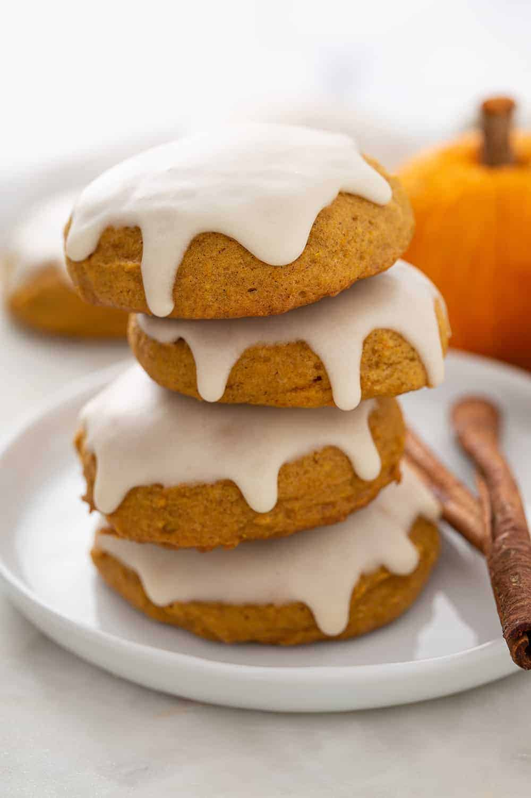

Iced Pumpkin Cookies Recipe

Description
Thick, cake-like cookies that are a great Halloween treat, but may also be enjoyed year round! These tender cookies are especially wonderful for those who love pumpkin spice!
Ingredients
- 2.5 Cups All-Purpose Flour
- 2 Teaspoons Ground Cinnamon
- 1 Teaspoon Baking Powder
- 1 Teaspoon Baking Soda
- 1/2 Teaspoon Ground Nutmeg
- 1/2 Teaspoon Ground Cloves
- 1/2 Teaspoon Salt
- 1.5 Cups White Sugar
- 1/2 Cup Butter, Softened
- 1 Cup Canned Pumpkin Puree
- 1 Large Egg
- 1 Teaspoon Vanilla Extract
Icing Ingredients
- 2 Cups Confectioners' Sugar
- 3 Tablespoons Milk
- 1 Tablespoon Melted Butter
- 1 Teaspoon Vanilla Extract
Steps
- Preheat the oven to 350 degrees F (175 degrees C). Grease two cookie sheets.
- To make the cookies: Combine flour, cinnamon, baking powder, baking soda, nutmeg, cloves, and salt in a medium bowl.
- Cream together sugar and butter in a mixing bowl until fluffy, 2 to 3 minutes. Add pumpkin, egg, and vanilla; beat until creamy. Mix in flour mixture until combined. Drop tablespoonfuls of dough onto the prepared cookie sheets; flatten slightly.
- Bake in the preheated oven until centers are set, 15 to 20 minutes, switching racks halfway through. Transfer cookies to a wire rack to cool to room temperature, about 30 minutes.
- Meanwhile, make the icing: Stir together confectioners' sugar, milk, butter, and vanilla in a bowl until smooth. Add milk as needed, to achieve drizzling consistency.
- Drizzle icing over cooled cookies with a fork.